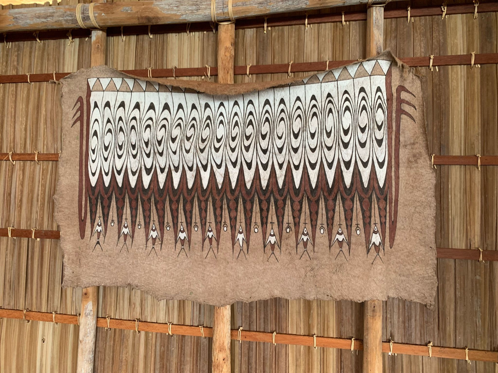
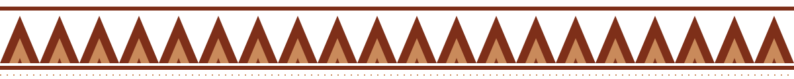
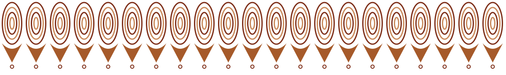
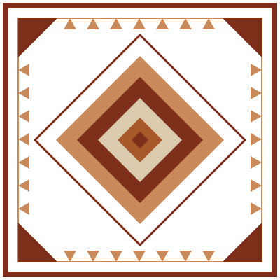
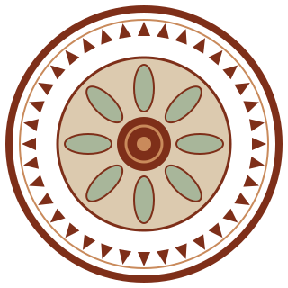
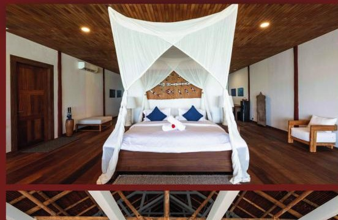
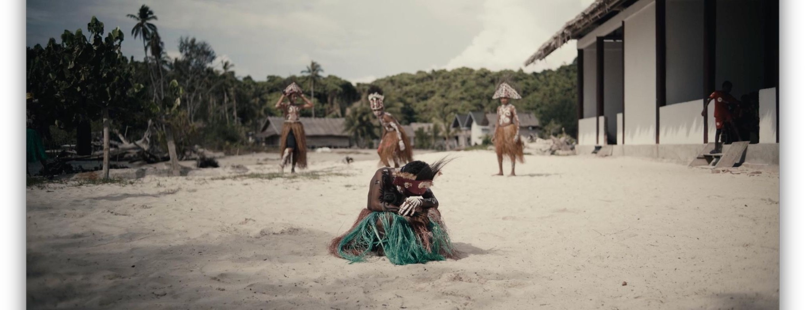
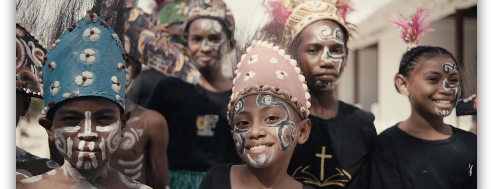

03 / Southwest Papuan Bark-Cloth Vector Motifs
From painted bark cloth to four scalable vectors

Triangle band, bark cloth
20% on Linen
Sorido Bay
100% border trim
Motif 01
Sentani / Southwest Papuan Chevron Border
Rebuilt from the triangle band that crowns the painted bark cloth. Headers, footers, card edges.
Min. height 6 mm · tile every 60 units
 Spiral and ring forms
Spiral and ring forms
20% on Linen
Sorido Bay
100% border trim
Motif 02
Reef Current Wave Divider
Concentric rings and pendant drops, simplified from the spiral ground of the cloth. Section breaks.
Divider only · never behind text
 Mirrored diamond forms
Mirrored diamond forms
20% on Linen
Kri Eco
100% trim / seal
Motif 03
Ancestral Diamond Frame
Nested diamonds and corner notches from the symmetrical cloth. Frames a single hero image or quote.
Square or 4:5 · one per page
 Central figure, bark cloth
Central figure, bark cloth
20% on Linen
Kri Eco
100% trim / seal
Motif 04
Eco Stamp Seal
Ring of chevrons around a sago-leaf rosette. Kri Eco conservation and eco-credential marks.
Min. 18 mm · Kri Eco first
One motif per layoutNever combine two motifs on the same page, screen or product.
15–25% on lightOn Linen or Sandstone, motifs sit back at 15 to 25% opacity.
100% only as trimFull strength only in Ochre Clay or Papua Brown, as a border or seal.
Palette colours onlyNo recolouring, gradients, shadows or outlines added.
Keep text clearNever run a motif behind body copy; keep 1× bird height of space.
Photography Direction
Reef, bungalow, people: always warm, always real

Underwater biodiversity
- Split-level and wide reef scenes with natural light
- Healthy coral and fish life; no gloves, no touching
- Keep the teal of the water; do not over-saturate

Overwater and cedar bungalows
- Timber, netting and linen in soft daylight
- Show the veranda, the water and the jetty together
- Straight verticals; no wide-angle distortion

Golden-hour Papuan hospitality
- Local people first, caught in genuine moments
- Low warm light, early morning or late afternoon
- Eye level, natural expressions; no staged poses
Colour grading & framing
Temperature +4 to +8, warm
Highlights −10, keep sand soft
Shadows +8, no crushed blacks
Saturation −5, greens calmer
Water keep Lagoon Teal
Never HDR, filters, heavy vignette
Grade toward the palette above.
Framing with vector bark borders

One chevron trim, top and bottom, 100% Papua Brown on a Linen band. Never over faces.